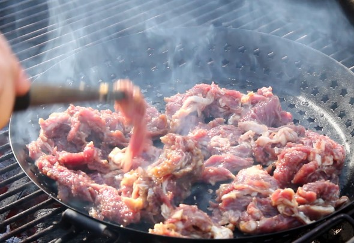

Bulgogi

Bulgogi (Korean-style marinated beef BBQ)
Good bulgogi is all about getting a good cut of beef.
Sirloin, tenderloin, or skirt steak are traditionally used, but any cut of marbled beef will work fine.
Leaner cuts like brisket will turn out too tough for this method of cooking. Bulgogi is the best when marinated overnight.
Ingredients
- 1 pound of beef tenderloin, thinly sliced against the grain
- 1/2 cup crushed pear
- 1/4 cup onion puree
- 4 cloves minced garlic
- 1 tsp minced ginger
- 1 chopped green onion
- 2 T soy sauce
- 2 T brown sugar
- pinch of ground black pepper
- 1 T sesame seed oil
- several thin slices of carrot (optional)
Steps
- Mix all the marinade ingredients (everything but the beef and carrots) in a bowl.
- Add the sliced beef (and carrots if using) and mix well.
- Allow the mixture to marinade overnight for best results. An hour is needed at minimum.
- Grill or pan-fry after marinating. Serve with rice and side dishes.
Return to main page